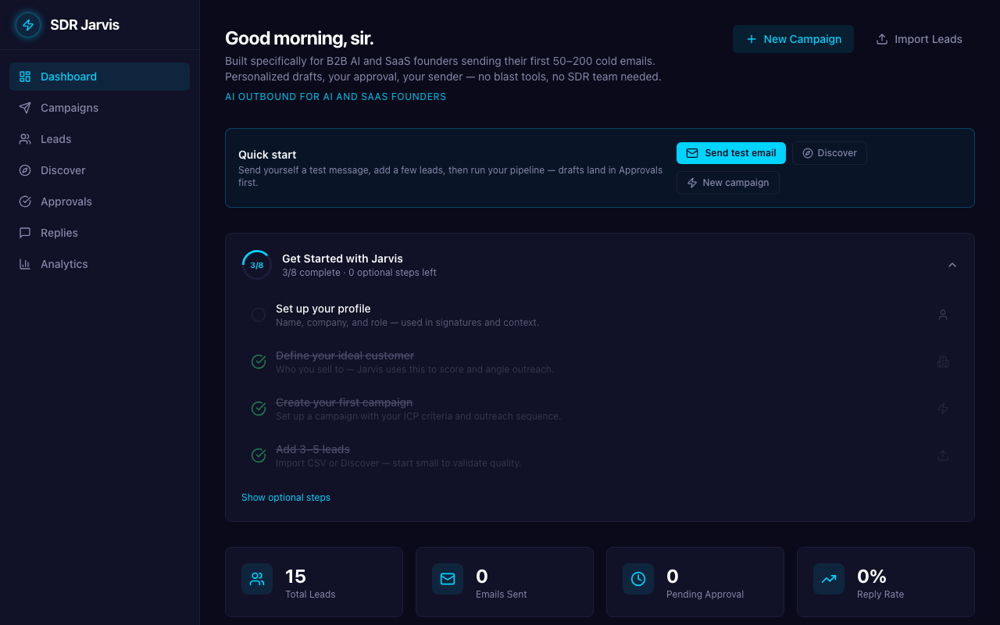

Step 1/dashboard
"Okay, I'm on the dashboard. It says 'Good morning, sir,' which is a bit funny since I'm Jasmine. I see 15 total leads, but zero emails sent, zero pending approval, and zero reply rate. This means no actual outreach has happened yet. I need to check the campaign setup, lead quality, and what kind of personalization is happening before I can report anything to the founders. I'll start by looking at 'Campaigns' to see what's been configured."
Page read: The current product page is available for evaluation.